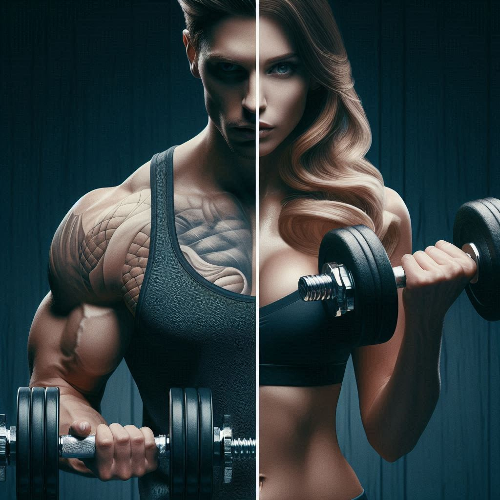
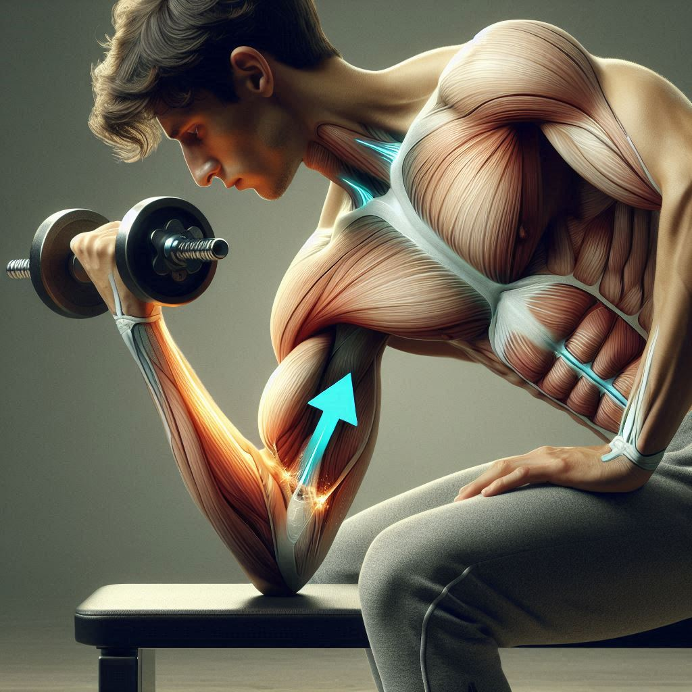
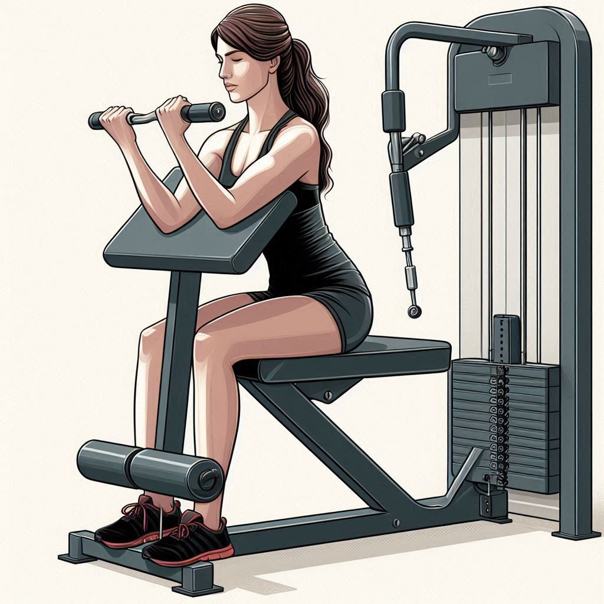

En el mundo del fitness, los bíceps son uno de los grupos musculares más populares para trabajar y esculpir. No solo son importantes para la estética del brazo, sino que también juegan un papel crucial en muchos movimientos funcionales y actividades diarias. Desde levantar objetos hasta realizar ejercicios más avanzados, tener bíceps fuertes y bien desarrollados puede mejorar significativamente tu rendimiento y tu calidad de vida.
Cada ejercicio está cuidadosamente seleccionado por sus beneficios específicos, desde aumentar la masa muscular hasta mejorar la fuerza y la resistencia. Acompáñanos en este recorrido por los ejercicios más efectivos para trabajar los bíceps y aprende cómo integrarlos en tu rutina de entrenamiento para obtener los mejores resultados.
-
CURL DE BARRA
El curl con barra es un ejercicio clásico de entrenamiento de fuerza que se enfoca en desarrollar los músculos bíceps en la parte frontal del brazo. Utilizando una barra recta o una barra EZ (curvada), este ejercicio permite levantar pesos más pesados en comparación con las mancuernas, lo que puede llevar a un aumento significativo de la masa y fuerza muscular.
Técnica:Sostén la barra con las palmas hacia arriba y las manos a la anchura de los hombros. Flexiona los codos y lleva la barra hacia los hombros.
-
CURL CON MANCUERNAS
El curl con mancuernas es un ejercicio esencial para el desarrollo de los bíceps. Este movimiento permite trabajar cada brazo de manera independiente, lo que ayuda a corregir desequilibrios musculares.
Técnica:ostén una mancuerna en cada mano con las palmas hacia arriba. Flexiona los codos para levantar las mancuernas hacia los hombros.
-
CURL MARTILLO
El curl de martillo es un ejercicio esencial en la rutina de entrenamiento de fuerza, conocido por su efectividad en el desarrollo de los músculos braquiales, braquiorradiales y, en menor medida, los bíceps. Este ejercicio ayuda a mejorar la fuerza del antebrazo y la definición muscular del brazo.
Técnica:De pie, con los pies a la anchura de los hombros, sostén una mancuerna en cada mano con las palmas enfrentadas. Flexiona los codos para levantar las mancuernas hacia los hombros sin girar las muñecas. Mantén los codos cerca del torso y baja las mancuernas lentamente a la posición inicial con control.
-
CURL CONCENTRADO 
El curl concentrado es un ejercicio aislado que se enfoca en trabajar el bíceps braquial, ayudando a definir y aumentar el tamaño del músculo. Es un ejercicio ideal para quienes desean una activación máxima del bíceps sin la interferencia de otros grupos musculares.
Técnica:Siéntate en un banco con los pies firmemente plantados en el suelo y las piernas ligeramente separadas. Sostén una mancuerna en una mano con la palma hacia arriba (supinación). Apoya el codo del brazo que sostiene la mancuerna en el interior del muslo, cerca de la rodilla, manteniendo el brazo extendido.
-
CURL PREDICADOR 
El curl predicador es un ejercicio que aísla el bíceps braquial, permitiendo una mayor concentración y desarrollo muscular. Este ejercicio es ideal para mejorar la fuerza y definición del bíceps debido a la posición de los brazos, que elimina la posibilidad de usar impulso.
Técnica:Flexiona los codos para levantar el peso hacia los hombros, manteniendo los brazos en contacto con el banco en todo momento. Contrae los bíceps en la parte superior del movimiento y mantén una ligera pausa. Exhala mientras levantas el peso.